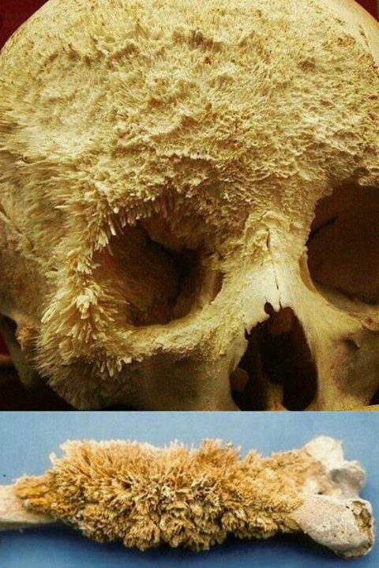
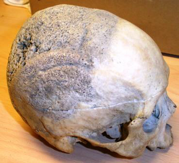
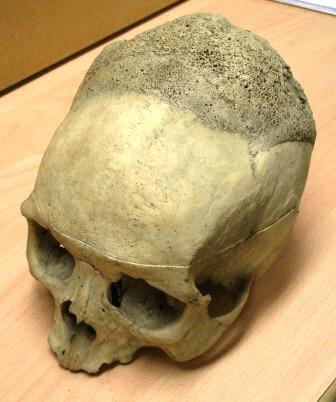
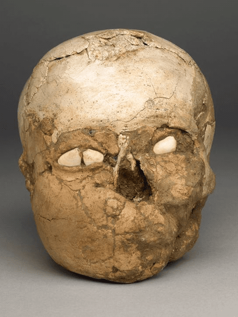
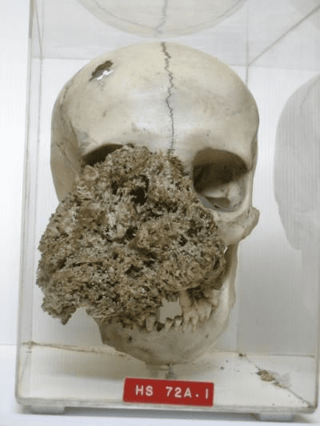
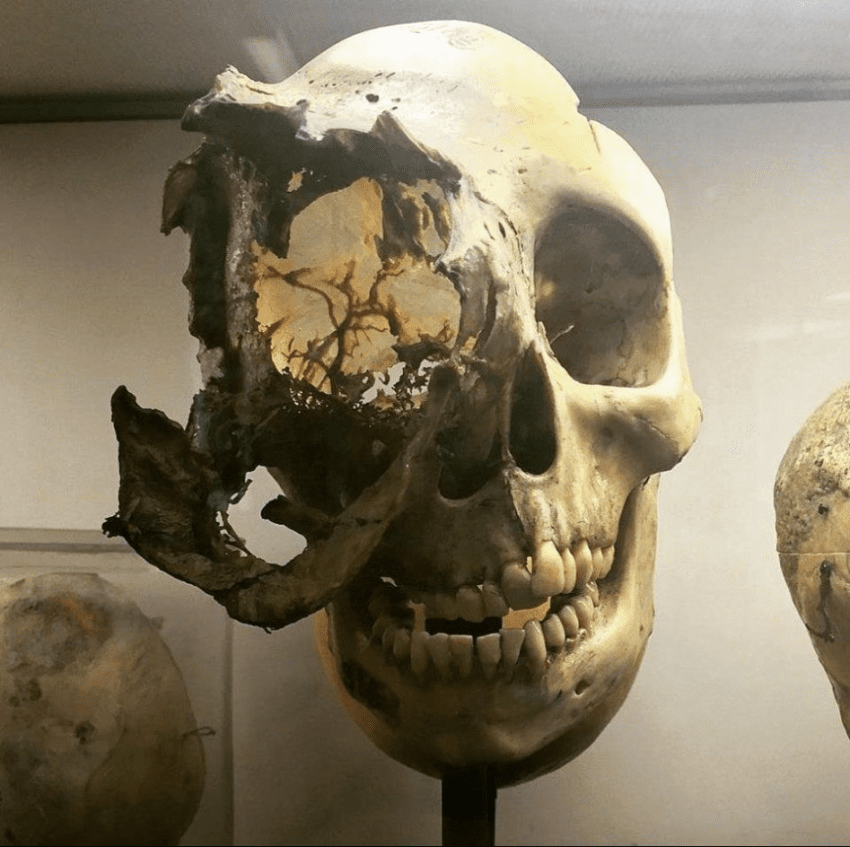
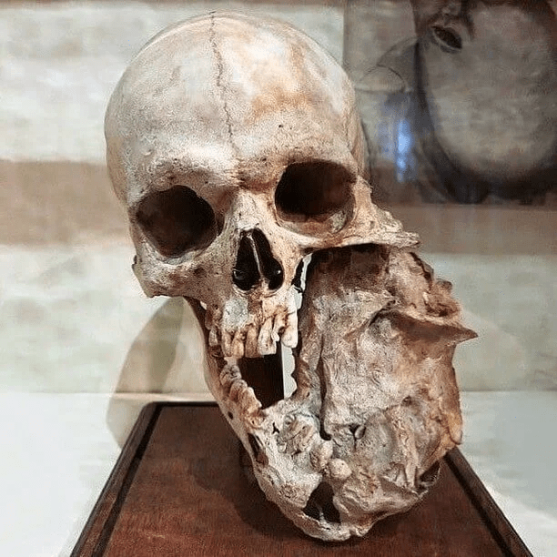

42 · 41 · 1 시간 전 · 원문







수집 당시 댓글 41개
신념 · 2 시간 전
깎꺆꺾껶꼮꾞뀪뀪끆끾껚껚 · 2 시간 전
아니 살아있을때 저렇게 됐다고?
아욘맨 · 2 시간 전
저런게 자라서 찌르고 있다고 생각하면.. 끔찍하네
섹스가뭔데시발 · 1 시간 전
어후...무섭다ㅠ
끄트머리 · 1 시간 전
저게 골수암인가 뭐 그거얌?? 근데 암이 뼈도 녹여버령??
↳ 답글 · 항히스타민제 · 1 시간 전
골육종뼈 자체가 암이된거임
↳ 답글 · 춥고배고파요 · 1 시간 전
암은 성장이 안멈추니까뼈가 계속 자라는거
오늘도야근이다 · 1 시간 전
엄마야 ... 얼마나 무서웠을까?
LuigiLegnani · 1 시간 전
ㅎㄷㄷ
파송송심영탁 · 1 시간 전
지옥에서 고통받는 모습같네 ㄷㄷ
장트러블맨 · 1 시간 전
저건 걍 생기는 즉시 안락사 가야겠는데?
클럽 · 1 시간 전
뺨 무습다
스푸트니크의기묘한모험 · 1 시간 전
진짜 옛날이면 죄 없는 가족이어도 죄가 있겠지 뭐 할 정도의 고통스런 병으로 보임;;
마휘핑 · 1 시간 전
걍 다음생 노리죠
↳ 답글 · Gasoline · 1 시간 전
아ㅋㅋ 빠른리겜ㄱ
극한의씹쌉거유폭유육덕충 · 1 시간 전
저건 지짜..얼마나 고통스러울까 ;;
주관적인요정 · 1 시간 전
뼈만 봐도 아프네
까드득까드듥 · 1 시간 전
시발 진짜 저건 안락사 허용해야 된다.
딜루도 · 1 시간 전
바로안락사
타잇타잇타잇 · 1 시간 전
설탕만 줄여도 암 발생확률 내려감
↳ 답글 · 노머고 · 1 시간 전
좆 탕씹 상 좆 당또 네놈들이냐아아아앗
↳ 답글 · 번미친놈 · 1 시간 전
대체 감미료에 대한 댓글을이제달아봅시다
↳ 답글 · 알빠노아루빠노 · 43 분 전
↳ 답글 · 타잇타잇타잇 · 3 분 전
아주 좋소!
언니 · 1 시간 전
감염된 테란 ㄷㄷㄷ
김팽달 · 1 시간 전
동생이 갈비뼈암 전단계까지 갔다가 발견해서 수술한 게 벌써 몇년 전이네
↳ 답글 · 출근은9시 · 1 시간 전
뼈암 전단계는 뭐임? 뼈는 뭔가 0 1 마냥 전조나 이런거 없을거 같은 느낌인데
↳ 답글 · 김팽달 · 1 시간 전
뼈에 종양 같은 게 생겼다더라절개하고 레이저로 지졌댔나 그 부위만 없애서 수술 자체는 간단하게 끝났다마는
↳ 답글 · 출근은9시 · 59 분 전
그러면 뼈가 부족한 부분 다시 자라? 아니면 인공뼈나 철골 같은걸로 커버함?
↳ 답글 · 김팽달 · 55 분 전
딱히 다른 조치는 안한 걸로다시 메꿔지는지는 몰?루
통모짜 · 1 시간 전
진화의 증거가 암 이라던데 무섭다
쇼갱 · 1 시간 전
지금은 고칠수 있는건가? 잘라내고 인공뼈로 바꾸는 수밖에 없을거같은데
↳ 답글 · 엔트부엉이 · 1 시간 전
저번에 뼈꺼내서 액체질소같은데 넣어서 괴사시키고 다시 넣었나 그런글 본거가틈
꾸이와꾸스 · 1 시간 전
진짜 끔찍한건 저 지경될때까지 살아있었다는거임...
다시살기 · 55 분 전
고래는 암이 안걸린대
↳ 답글 · 적록색약 · 47 분 전
암이 안걸리는게 아니라 암이 암에 걸려서 암이 죽을정도로 심각해지기 전에 치료된다고 알고 있음
↳ 답글 · 다시살기 · 6 분 전
아 맞다 고래는 암이 자연치유된대
쿠폰아까워 · 51 분 전
저거 어케 잘 해서 치아 새로 나게 못 써먹나
바위게맛살 · 45 분 전
저게 진짜 고통스럽다며
kem · 44 분 전
댓글
수집 당시 댓글 41개
신념 · 2 시간 전
깎꺆꺾껶꼮꾞뀪뀪끆끾껚껚 · 2 시간 전
아니 살아있을때 저렇게 됐다고?
아욘맨 · 2 시간 전
저런게 자라서 찌르고 있다고 생각하면.. 끔찍하네
섹스가뭔데시발 · 1 시간 전
어후...무섭다ㅠ
끄트머리 · 1 시간 전
저게 골수암인가 뭐 그거얌?? 근데 암이 뼈도 녹여버령??
· 항히스타민제 · 1 시간 전
골육종
뼈 자체가 암이된거임
· 춥고배고파요 · 1 시간 전
암은 성장이 안멈추니까
뼈가 계속 자라는거
오늘도야근이다 · 1 시간 전
엄마야 ... 얼마나 무서웠을까?
LuigiLegnani · 1 시간 전
ㅎㄷㄷ
파송송심영탁 · 1 시간 전
지옥에서 고통받는 모습같네 ㄷㄷ
장트러블맨 · 1 시간 전
저건 걍 생기는 즉시 안락사 가야겠는데?
클럽 · 1 시간 전
뺨 무습다
스푸트니크의기묘한모험 · 1 시간 전
진짜 옛날이면 죄 없는 가족이어도 죄가 있겠지 뭐 할 정도의 고통스런 병으로 보임;;
마휘핑 · 1 시간 전
걍 다음생 노리죠
· Gasoline · 1 시간 전
아ㅋㅋ 빠른리겜ㄱ
극한의씹쌉거유폭유육덕충 · 1 시간 전
저건 지짜..얼마나 고통스러울까 ;;
주관적인요정 · 1 시간 전
뼈만 봐도 아프네
까드득까드듥 · 1 시간 전
시발 진짜 저건 안락사 허용해야 된다.
딜루도 · 1 시간 전
바로안락사
타잇타잇타잇 · 1 시간 전
설탕만 줄여도 암 발생확률 내려감
· 노머고 · 1 시간 전
좆 탕
씹 상 좆 당
또 네놈들이냐아아아앗
· 번미친놈 · 1 시간 전
대체 감미료에 대한 댓글을이제달아봅시다
· 알빠노아루빠노 · 43 분 전
· 타잇타잇타잇 · 3 분 전
아주 좋소!
언니 · 1 시간 전
감염된 테란 ㄷㄷㄷ
김팽달 · 1 시간 전
동생이 갈비뼈암 전단계까지 갔다가 발견해서 수술한 게 벌써 몇년 전이네
· 출근은9시 · 1 시간 전
뼈암 전단계는 뭐임?
뼈는 뭔가 0 1 마냥 전조나 이런거 없을거 같은 느낌인데
· 김팽달 · 1 시간 전
뼈에 종양 같은 게 생겼다더라
절개하고 레이저로 지졌댔나 그 부위만 없애서 수술 자체는 간단하게 끝났다마는
· 출근은9시 · 59 분 전
그러면 뼈가 부족한 부분 다시 자라?
아니면 인공뼈나 철골 같은걸로 커버함?
· 김팽달 · 55 분 전
딱히 다른 조치는 안한 걸로
다시 메꿔지는지는 몰?루
통모짜 · 1 시간 전
진화의 증거가 암 이라던데 무섭다
쇼갱 · 1 시간 전
지금은 고칠수 있는건가? 잘라내고 인공뼈로 바꾸는 수밖에 없을거같은데
· 엔트부엉이 · 1 시간 전
저번에 뼈꺼내서 액체질소같은데 넣어서 괴사시키고 다시 넣었나 그런글 본거가틈
꾸이와꾸스 · 1 시간 전
진짜 끔찍한건 저 지경될때까지 살아있었다는거임...
다시살기 · 55 분 전
고래는 암이 안걸린대
· 적록색약 · 47 분 전
암이 안걸리는게 아니라 암이 암에 걸려서 암이 죽을정도로 심각해지기 전에 치료된다고 알고 있음
· 알빠노아루빠노 · 43 분 전
· 다시살기 · 6 분 전
아 맞다 고래는 암이 자연치유된대
쿠폰아까워 · 51 분 전
저거 어케 잘 해서 치아 새로 나게 못 써먹나
바위게맛살 · 45 분 전
저게 진짜 고통스럽다며
kem · 44 분 전